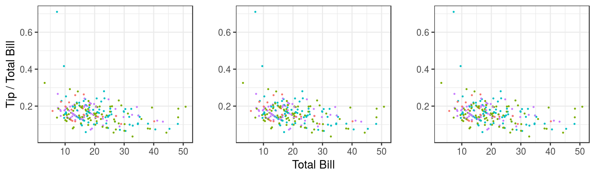

Grappling with Graphics
by Ellie Campbell - April 30, 2018
The plotting capabilities in base plot in R are good, but for more flexibility and control, ggplot is the gold standard. In ggplot, the first line creates a plot object and points to whatever data you will be plotting. Then, one can dictate the form of the plot using any number of “geoms,” designing individual components separately and adding them to the plot, along with formatting elements like labels, title, and themes.
My first introduction to ggplot, and to R as a whole, was through the lab component of a statistics course I took my first year at the Bren School. That first time around, ggplot was introduced in lecture with a few associated in-class exercises and then over the course of the semester I spent hours tinkering with and refining presentation – palettes, graph types, fonts and features – for various assignments, a process that involved lots of google searches and scrounging through stack overflow for fragments of code to get things like outlines, or legends, or offsets in bar graphs just precisely right.
A few weeks ago, we went over the use of ggplot as part of our training in preparation for calculating the 2018 OHI. We began with a structured tutorial also, and dove deeper into the meaning and syntax of the arguments, walking step-by-step through some of the nitty-gritty details and more advanced capabilities. One thing in particular that became more clear to me, was the functionality of aes() or the “aesthetics,” which was something I’d found particularly confusing in my first encounters with ggplot. For example, it was not completely clear to me why you would put some arguments within aes() and some outside aes(), or define x and y in aes() in the first line versus individual geoms; e.g. these give the same plot:
ggplot(data = tips, aes(x = total_bill, y = tip/total_bill, color = day)) +
geom_point(size = 0.25)
ggplot(data = tips, aes(color = day)) +
geom_point(aes(x = total_bill, y = tip/total_bill), size = 0.25)
ggplot(data = tips) +
geom_point(aes(x = total_bill, y = tip/total_bill, color = day), size = 0.25)
Other takeaways for me were (1) modularity of ggplot means it is good for more complicated graphics, but perhaps unnecessarily verbose for simple plots (2) facetting is a very helpful feature for looking at multifaceted data (3) there are many theme options for making pretty plots, some of which can be found in the ggthemes package, and (4) ggplot is especially powerful for data visualization when combined with other packages in tidyverse! For example, using some data from the gapminder dataset:
gap <- gapminder %>%
filter(continent == "Europe") %>%
mutate(cummean_gdpPercap = cummean(gdpPercap)) %>%
group_by(country) %>%
filter(max(cummean_gdpPercap)-min(cummean_gdpPercap) > 2000) %>%
ungroup()
ggplot(data = gap) +
geom_line(aes(x = year, y = cummean_gdpPercap), color = "lightsteelblue") +
geom_line(aes(x = year, y = gdpPercap), color = "coral") +
facet_wrap(~ country) +
theme_bw() +
labs(x = "Year", y = "Cumulative Mean per Cap. GDP \n") 
The details of ggplot stuck with me somewhat better this time around, and it is hard to say how much of that was because of previous hours spent tinkering with ggplot, and how much was because we walked through the details step-by-step and as a group. I wonder, when developing proficiency with some computer language or software, what is the relative return from hours spent on collaborative learning, structured tutorials, or individual tinkering? What about an optimal combination of these?
There’s certainly an huge advantage to learning with others – you can bounce ideas off each other, and ask for help. And it is more fun! Having a mentor is likewise invaluable. Despite the vast online help available and the magic that is Google, sometimes asking another human is a shorter, easier path to answers we are seeking.
GitHubbing through Life
by Iwen Su - April 6, 2018
My first experience with GitHub was fairly painless, except that I hadn’t differentiated it from just another server where you could store your files and folders. “Pull, push, and commit” was written on the whiteboard so we could remember the order of operations to update files. For the most part, I didn’t run into any errors. However, many of the capabilities that GitHub wielded were unknown to me. I didn’t know that you could essentially rearrange folders and files on your local computer and update the version online with the new configuration.
It wasn’t until I watched Julie Lowndes’s video on being a marine data scientist, which did a section on using GitHub, that I got a glimpse into why you would use it, the array of things you can do with it, and what all these new terms such as “branches” and “committing” meant. In the talk, Julie quotes a 2016 Nature article that describes GitHub functionality:
“For scientist coders, [Git] works like a laboratory notebook for scientific computing …it keeps a lasting record of events”
Wait, what is “Git”? Is it just shorthand for “GitHub”? Actually, Git is the version control system that is responsible for keeping the lasting record of events. GitHub is a space, like a library, that can hold numerous laboratory notebooks, or data science projects. Andrew McWilliams does a good job at explaining the technical and functional differences between the two in a blog post.
For my master’s group project, we decided to use GitHub as our versioning library for our data analysis. The nature of the project required more than one person to work on the same document or code simultaneously. Immediately we ran into issues collaborating on the same document. These are also known as “merge conflicts” in the Git world. None of us had gotten proper training or guidance about what to expect when a merge conflict arises. Sometimes we wouldn’t notice until several days later that, to our surprise, the excel file we had been working in now had two copies of the data table, one on top of the other, accompanied with strange symbols and headers, such as:
<<<<<<< HEADor
=======Through the OHI training, I learned that this was a separator partitioning my version of the data table from my peers’ updates to the data table. We experienced several headaches from rewriting each other’s work before we realized that Git was trying to tell us something in error messages like:
CONFLICT : Merge conflict in urchindata.csv
Automatic merge failed; fix conflicts and then commit the resultOften times the error messages are intimidating, because there is coding lingo thrown into it. However, the messages usually give us a good hint as to what is causing the error. Nevertheless, there are many barriers to entry to learning GitHub and learning to want to use GitHub. One of those is the jargony vocabulary of key terms only used in the Git and GitHub world: commit, branches, merge conflicts, pull, push, master branch, repository, and projects. Check out our cheatsheet on Git terminology here.
First Impressions
by Camila Vargas - February 23, 2018
New year, new challenges. We joined the OHI team in late January this year. I was excited to find out what our day-to-day “office” would look like. Before starting this job, I had a basic understanding of the OHI project, but to be honest, I had pretty limited experience with R (not a whole lot) and that was it. I’m a curious learner, but I would definitely not define myself as a computer programming person. Yet, here I was.
Our first “homework” was to read through the OHI 2017 Methods. While, we didn’t need to read the whole thing in detail, it was important for us to get a glimpse of how the OHI is actually calculated.
At a first glance, it was OK. I thought it was interesting to dig into the actual math within this index. But of course you don’t get the whole picture just by reading some of the method document. One of the biggest challenges (my fellow fellows agreed with me on this) was to relate the entire workflow outlined in Figure 1.1 with what is actually going on in the math – and with this I mean the formulas. Challenges inspire! We started creating an expanded version of this figure to help us connect the dots faster (not yet finalized but will soon be displayed in the OHI theory tab!).
While we were introduced to the theory behind OHI, we also walked through how everything is organized, where the actual information is, and how to get to it. All I can say about this is that it’s all about links and more links. Too many links. I’m not sure if my brain is stuck in the mindset of organizing things into respective folders or if it’s just because everything is new, but it was overwhelming to learn that there are html links for everything. For example, from the OHI 2017 Methods, there are links to GitHub and links to other websites that explain certain topics in more detail.
My initial reaction was: WHAT IS WHAT AND WHERE IS EVERYTHING?
By the end of the day, I realized it was just panic from exposure to something new. Just breath. I’m sure at some point we are going to figure out how the information is organized (because I’m pretty sure it is already well organized). Nevertheless, the OHI fellows are working on a visual explanation of this link chaos.
And links were not the only chaotic thing. We were also introduced to Github and R Markdown. Amazing tools! But you have to break the ice before you can feel comfortable and actually know what you are doing. It seemed overwhelming at the beginning, but after only four sessions of working with all this new information and I already feel more comfortable.
I am enjoying the challenge. Learning a whole lot. And looking forward to communicating to you all about our progress and experience!